フォールトトレラント燃料制御システムのモデル化
次の例では、Stateflow® を Simulink® と組み合わせてハイブリッド システムを効率的にモデル化する方法を示します。このタイプのモデル化は、離散イベントに基づいて多数の可能な動作モードを持つシステムに対して特に便利です。従来の信号の流れが Simulink で処理されるのに対して、制御設定の変更は Stateflow で実装されます。以下で説明するモデルでは、ガソリン エンジンの燃料制御システムを表します。このシステムは、個々のセンサーの故障が検出され、制御システムが連続稼働用に動的に再設定されるという点で非常に堅牢です。
目次
解析と物理学
物理的および経験的関係が、このモデルのスロットルおよびインテーク マニホールドのダイナミクスの基礎となっています。空燃比を計算するには、(インテーク マニホールドから送り込まれる) 空気の質量流量を、(バルブで噴射される) 燃料の質量流量で割ります。理想 (つまり、化学量論的) 混合比は、パワーと燃費、排気との間での良い妥協点を与えます。このシステムの目標空燃比は 14.6 です。通常、センサーが排気ガス (EGO) 中の残留酸素量を決定します。これにより、混合比が明示され、閉ループ制御用のフィードバック測定が可能になります。センサーが高酸素レベルを示した場合、制御則は燃料比を増加させます。センサーが (非常に低い残留酸素レベルに相当する) 燃料リッチ混合気を検出すると、コントローラーは燃料比を減少させます。
モデル化
図 1 に、Simulink モデルの最上位レベルを示します。このモデルを開くには、MATLAB® コマンド ウィンドウに sldemo_fuelsys と入力します。モデル ウィンドウのツール バーの [再生] ボタンを押してシミュレーションを実行します。モデルが sldemo_fuelsys_data.m からモデル ワークスペースに必要なデータを読み込みます。このモデルは、MATLAB ワークスペースの sldemo_fuelsys_output というデータ構造に関連データのログを作成します。ログを作成する信号は青色のインジケーターを持ちます (図 1 を参照)。
モデル ワークスペースに初期条件を読み込むと、シミュレーション データが、開いている他のモデルのデータから分離されたままになることに注意してください。また、これにより、MATLAB ワークスペースが乱雑になることが避けられます。モデル ワークスペースの内容を表示するには、[表示] > [モデル エクスプローラー] を選択し、[モデル階層] リストから [モデル ワークスペース] をクリックします。
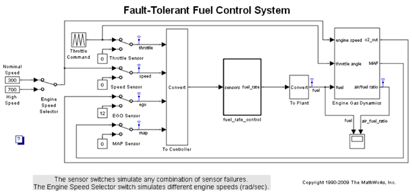図 1: 燃料制御システム モデルの最上位レベルのブロック線図
fuel_rate_control は、システムのセンサーからの信号を使用して、化学量論的な混合気を実装する燃料比を決定します。燃料比はエンジンの気体力学モデル内で実際の空気流量と組み合わされて、排気時に検出される最終的な混合比を決定します。
故障をシミュレートするために、ユーザーは、4 つのセンサー (スロットル角度、速度、EGO、マニホールドの絶対圧力 [MAP]) のそれぞれを選択的に無効にすることができます。Simulink は、Manual Switch ブロックを利用してこれを実装します。ブロックをダブルクリックしてスイッチの位置を変更します。同様に、左端のスイッチを切り替えることにより、高いエンジン速度による故障状態を引き起こすことができます。Repeating Table ブロックは、スロットル角度の入力を提供し、マスク内で指定されデータのシーケンスを周期的に繰り返します。
図 2 に示す fuel_rate_control ブロックは、センサー入力とフィードバック信号を使用して、化学量論的な混合比を実装するよう燃料比を調整します。このモデルでは、この戦略を実装するために、制御ロジック、空気流量計算、および燃料計算という 3 つのサブシステムを使用しています。 通常の動作では、モデルは空気流量を推定し、その推定値に目標混合比の逆数を掛けて燃料比を得ます。酸素センサーからのフィードバックによって、比率推定値の閉ループ調整を行い、理想混合比を維持します。
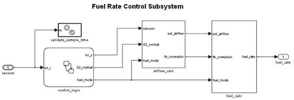図 2: 燃料比コントローラー サブシステム
制御ロジック
6 つのパラレル ステートの集合で構成される単一の Stateflow チャートが制御ロジック全体を実装します。図 3の上部に示す 4 つのパラレル ステートは、4 つの個別センサーに対応しています。下部にある残りの 2 つのパラレル ステートは、4 つのセンサーのステータスを同時に検討し、システム全体の動作モードを決定します。このモデルは Stateflow ブロック線図全体を一定のサンプル時間間隔 0.01 秒で同期的に呼び出します。これにより、正しいモードへの遷移に対する条件を適時にテストできます。
control_logic Stateflow チャートを開くには、fuel_rate_control サブシステムでこのチャートをダブルクリックします。
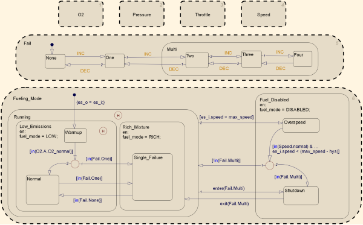図 3: 制御ロジック チャート
実行が開始されると、酸素センサー (EGO) を除いて、すべてのステートが normal モードで開始します。ウォームアップ期間が完了するまで最初は O2_warmup ステートに入ります。システムがスロットルおよび圧力センサーの故障を検出するのは、それらの測定値が公称範囲から外れた場合です。速度信号がないときにマニホールドが真空になる場合は、速度センサーの故障を示しています。酸素センサーにも故障状態を表す公称範囲がありますが、最小信号レベルと範囲の下限が共に 0 であるため、故障が検出されるのは、上限を超えた場合に限定されます。
どのセンサーが故障したかにかかわらず、モデルは常に直接イベント ブロードキャスト Fail.INC を生成します。このように、汎用センサー故障ロジックのトリガーはセンサーから独立しています。モデルは、対応するセンサー回復イベント Fail.DEC も使用します。Fail ステートは、故障したセンサーの数を追跡します。カウンターは、Fail.INC イベントごとにインクリメントし、Fail.DEC イベントごとに減分します。モデルはスーパーステート Multi を使用して、複数のセンサーが故障したすべてのケースをグループ化します。
一番下のパラレル ステートは、エンジンの燃料供給モードを表しています。1 つのセンサーが故障した場合、動作は継続されますが、混合気をよりリッチにして、より高い排気の犠牲のもとに、より円滑なエンジン回転を実装します。複数のセンサーが故障した場合は、空燃比を確実に制御できないため、安全対策としてエンジンを停止させます。
酸素センサーのウォームアップ中、モデルは混合気を正常レベルに保ちます。これに満足できない場合、ユーザーは Rich_Mixture スーパーステート内でウォームアップ ステートを移動することで、設計を変更できます。ウォームアップ期間中にセンサーの故障が発生した場合、ウォームアップ期間の経過後に Single_Failure ステートに入ります。それ以外の場合は、この時点で Normal ステートがアクティブになります。
Fuel_Disabled スーパーステート内に新しいステートを作成することによって、モデルに過速度保護機能が追加されています。ヒストリ ジャンクションを使用することによって、モデルが過速度ステートから出ると、チャートが適切なステートに戻ることを保証しました。エンジンの安全要件がより適切に規定されるようになるにつれて、Fuel_Disabled スーパーステートに停止ステートをさらに追加できるようになります。
センサー補正
センサーが故障すると、センサーの推定値が計算されます。たとえば、圧力センサーの計算を開きます。通常のセンサー動作では、圧力センサーの値が使用されます。それ以外の場合、値は推定されます。
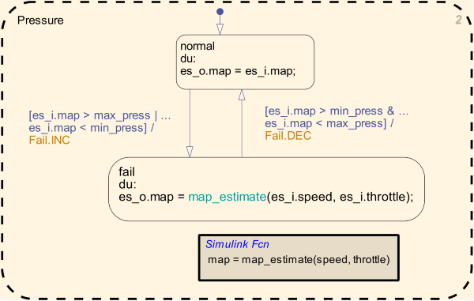マニホールド圧の推定値は、エンジン速度とスロットル位置の関数として計算されます。この値は、Stateflow 内で Simulink 関数を使用して簡単に計算できます。
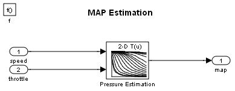空気流量計算
(図 5 に示す) Airflow Calculation ブロックは、中央の制御則の位置です。このブロックは、fuel_rate_control サブシステム内にあります (このブロックを開く)。このブロックは吸入空気流量を推定して、適切な空燃比を実装する燃料比を決定します。閉ループ制御は、混合比を正確に維持するために、残留酸素フィードバックに応じてこの推定値を調整します。センサーの故障により開ループ動作が要求された場合でも、制御目的を最適に満たすために最新の閉ループ調整が保持されます。
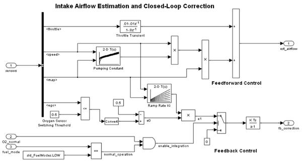図 5: 空気流量の推定と補正
方程式 1
エンジンの吸入空気流量は、エンジン速度とマニホールド圧、時変スケール ファクターの積として定式化できます。
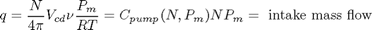
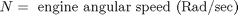
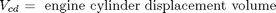
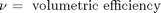
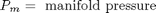
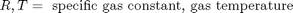
Cpump はルックアップ テーブルによって計算され、速度と圧力が乗算されて、初期流量が推定されます。過渡時に、スロットル流量と、高域フィルターで近似された導関数により、充填動力学に対して空気流量が補正されます。制御アルゴリズムが方程式 2 に従って追加補正を行います。
方程式 2
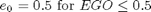
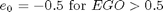
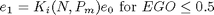
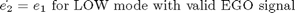
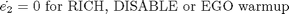
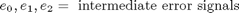
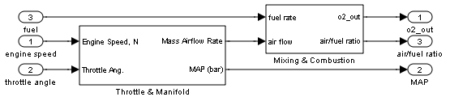図 6: Engine Gas Dynamics サブシステム
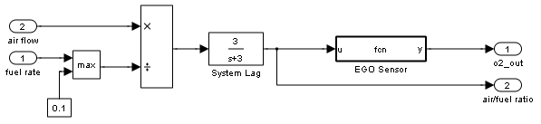図 7: Engine Gas Dynamics サブシステム内の Mixing & Combustion ブロック
非線形酸素センサー (EGO Sensor ブロック) は、Engine Gas Dynamics サブシステム (図 6 を参照) 内の Mixing & Combustion ブロック (図 7 を参照) 内にあります。EGO センサーは、双曲線正接関数としてモデル化されており、0.5 ボルトに近づくと、意味のある信号を提供します。方程式 2 に示されているように、フィードバック ループ内の生の誤差は切り替えしきい値で検出されます。空燃比が低い (混合気がリーンである) 場合、元の空気推定値は小さすぎるため、増やす必要があります。逆に、酸素センサー出力が高い場合、空気推定値が高すぎるため、減らす必要があります。補正項が、混合比で定常偏差を 0 にするレベルを実装できるように、積分制御が利用されます。
通常の閉ループ動作モード、LOW では、誤差を最小限に抑えるために積分器を動的に調整します。積分は離散時間で実行され、10 ミリ秒ごとに更新されます。ただし、RICH または O2 故障モードで、開ループで動作する場合、フィードバック誤差は無視され、積分器が保持されます。これにより、最新の有効なフィードバックに基づいて最適な補正が行われます。
燃料計算
fuel_calc サブシステム (fuel_rate_control サブシステム内。図 8 を参照) は、所与の空気流量計算および故障ステータスと一致するようにインジェクター信号を設定します。最初の入力は、計算された空気流量推定値です。これに目標空燃比を乗算すると、指令燃料比が得られます。通常、目標は化学量論的です。つまり、最適な空気燃料混合比 14.6 と等しくなります。センサーの故障が発生すると、Stateflow 制御ロジックは、混合気が化学量論的混合比よりわずかにリッチになるか、または完全に停止されるように、モード入力を値 2 または 3 (RICH または DISABLED) に設定します。
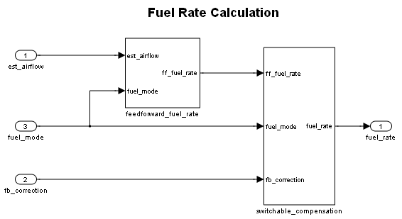図 8: fuel_calc サブシステム
fuel_calc サブシステム (図 8) は、モードによって異なる目的を達成するために調整可能な補償 (図 9) を使用します。通常の動作では、フィードバック補正信号の位相進み補償が閉ループの安定余裕を広げます。ただし、RICH モードでかつ EGO センサーの故障時 (開ループ) には、推定プロセスで発生した雑音を減少させるために複合燃料信号が低域フィルタリングされます。最終結果は、実際のシステムでは、インジェクター パルス時間に変換される燃料流量を表す信号になります。
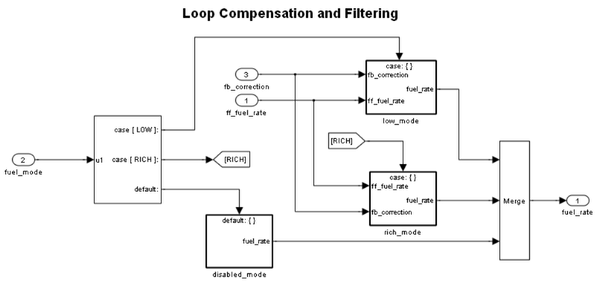図 9: 切り替え可能補償サブシステム
結果とまとめ
シミュレーション結果を図 10 と図 11 に示します。シミュレーション実行時に使用されるスロットル入力は、2 秒間にわたって 10°から 20°に傾斜してから、次の 2 秒間にわたって 10°に戻ります。ユーザーがさまざまな故障状態と故障モードを実験できるように、このサイクルは連続的に繰り返されますが、エンジンは一定の速度に保たれます。モデル内でセンサー スイッチをダブルクリックして、関連するセンサーの故障をシミュレートします。この操作を繰り返して、スイッチを切り替えて通常の動作に戻ります。
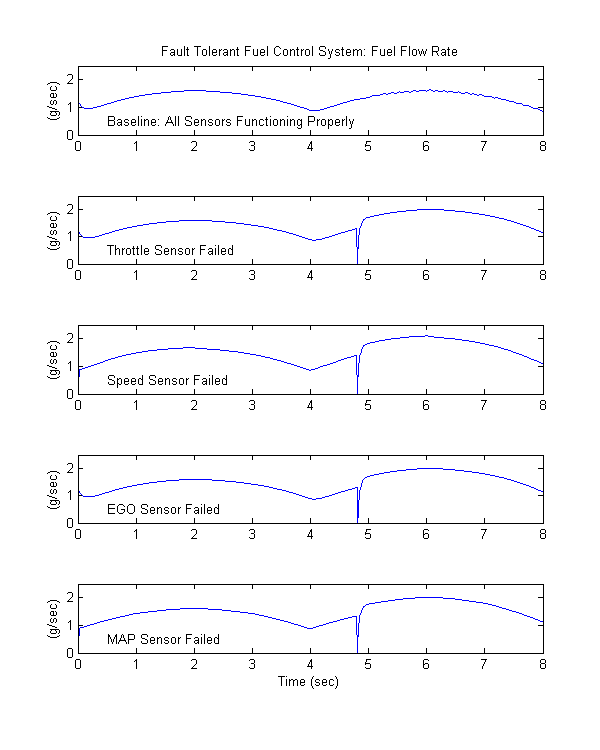図 10: さまざまなセンサー故障の場合の燃料流量の比較
図 10 では、故障がない条件 (ベースライン) 下での燃料流量と、各センサーに単一の故障がある場合に適用される燃料流量を個別に比較しています。いずれの場合にも、燃料流量と (図 12 に示す) 三角形のスロットル コマンド間の非線形の関係に注目してください。ベースラインの場合、燃料比は厳密に調整され、EGO センサーの入力回路が持つ切り替えの性質により小さな波形を示します。他の 4 つの場合、システムは開ループで動作します。この制御戦略は、単一故障モードで正しい燃料プロファイルを維持するのに効果的であると証明されています。各故障状態で、燃料比は基本的にベースライン流量の 125% であり、設計目標の 80% リッチを達成します。
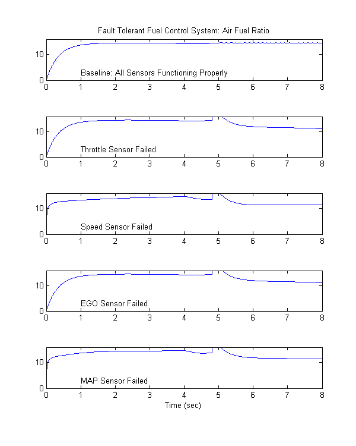図 11: さまざまなセンサー故障の場合の空燃比の比較
図 11 に、それぞれの場合について対応する空燃比をプロットします。ベースライン プロットは、閉ループ動作の効果を示しています。混合比は、化学量論的目標の 14.6 に非常に厳密に調整されています。リッチな混合比が図 11 の下の 4 つのプロットに示されています。閉ループの場合とは異なり、これらは厳密に調整されていませんが、空燃比の目標に近似しています (0.8*14.6=11.7)。
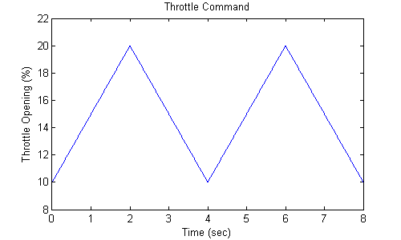図 12: スロットル コマンド
システムの過渡的挙動を図 13 に示します。スロットル角度が一定の 12°で、システムが定常状態の場合に、スロットルの故障が t = 2 で発生し、t = 5 で補正されています。故障の開始時に、燃料比がただちに増加します。リッチな空燃比がシステム中に伝播されるため、排気時に効果が現れます。その後、閉ループ動作に戻ると、定常状態条件が迅速に回復します。
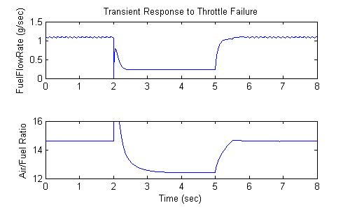図 13: 故障検出に対する過渡応答
注意
Stateflow デバッガーでアニメーションを有効にした場合、さまざまなステートがアクティブになると、Stateflow ブロック線図でステート遷移が強調表示されます (図 3 を参照)。アクティブ化の順序は、色を変更することで示されます。このように密接に連結した Stateflow と Simulink 間の相乗効果により、完全な制御システムのモデル化および開発が促進されます。エンジニアの概念を自然な、構造化された方法で発展させることができ、即時の視覚フィードバックで各手順を強化できます。
関連デモ
sldemo_fuelsys 関連のデモについては、表 1 を参照してください。
| 固定小数点設計 | fxpdemo_fuelsys |
| 本番用 C/C++ コードの生成 | rtwdemo_fuelsys |
| 固定小数点の本番用 C/C++ コードの生成 | rtwdemo_fuelsys_fxp |
表 1: sldemo_fuelsys を使用した関連製品のデモ